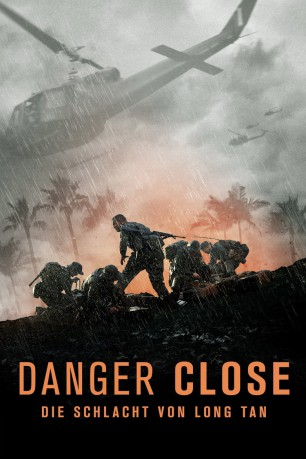
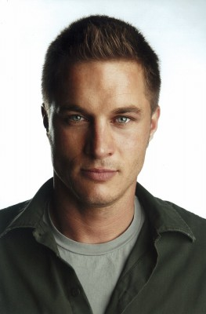

#12076 Danger Close - Die Schlacht von Long Tan
Alternativ: Danger Close (Englischer Titel)
 
 IMDB-Wertung: 7.0 / 10
IMDB-Wertung: 7.0 / 10  Tomatometer: 67
Tomatometer: 67  Metascore: 0
Metascore: 0 
Major Smith und seine Kompanie werden während eines Einsatzes vom Vietcong eingekesselt. Verbissen versucht der Major, sich gegen die Übermacht von über 2.500 kampferprobten vietnamesischen Soldaten zur Wehr zu setzen. Die Überlebenschancen stehen denkbar schlecht …
Jahr: 2019
Dauer: 118 Minuten
FSK: 16
Land: Australien Studio: Splendid FilmTonspuren: DTS - ,
Untertitel: Deutsch,
Auflösung: 1080p (1920x800) Größe: 6369 MB
Genre: Action, Drama, Krieg
Regisseur: Kriv Stenders
Drehbuch: Stuart Beattie, James Nicholas, Karel Segers, Paul Sullivan, Jack Brislee
Soundtrack: Caitlin Yeo
Darsteller:
-  Travis Fimmel als Major Harry Smith
 Richard Roxburgh als Brigadier David Jackson
Richard Roxburgh als Brigadier David Jackson Luke Bracey als Sergeant Bob Buick
Luke Bracey als Sergeant Bob Buick- Alexander England als Warrant Officer Class 2 Jack Kirby
 Daniel Webber als Private Paul Large
Daniel Webber als Private Paul Large Nicholas Hamilton als Private Noel Grimes
Nicholas Hamilton als Private Noel Grimes- Matt Doran als Major Noel Ford
- Mojean Aria als Second Lieutenant Gordon Sharp
- Stephen Peacocke als Second Lieutenant Adrian Roberts
- Emmy Dougall als Little Pattie
- Uli Latukefu als Bombardier Ray Ngatai
 Anthony Hayes als Lieutenant Colonel Colin Townsend
Anthony Hayes als Lieutenant Colonel Colin Townsend- Myles Pollard als Flight Lieutenant Frank Riley
- Aaron Glenane als Captain Morrie Stanley
- Lincoln Lewis als Private Kevin Graham
- Ben Esler als Gunner Ken Deacon
- Aaron L. McGrath als Private Brian Hornung
- Christopher Sommers als RAAF Group Captain Peter Raw
- Sean Lynch als Sergeant Paddy Todd
- Sam Parsonson als Second Lieutenant David Sabben
- Sam Cotton als Corporal Phil 'Doc' Dobson
- Travis Jeffery als Second Lieutenant Geoff Kendal
- Lasarus Ratuere als Corporal Buddy Lea
- Sonny Le als North Vietnamese Commander
- Paul Allica als Trojan Pilot
- Oakley Kwon als Viet Cong Female
- Ethan Robinson als Private Alf Bartlett
- Julian Cullen als Private Frank Topp
- Richard Te Are als Gunner Murry Watene
- Ryan Hance als Private Barry 'Custard' Meller
 Trinity L Beals als NV Sniper (credit only)
Trinity L Beals als NV Sniper (credit only)- Joel Drabble als Radio Operator
- Niam Mayes als Australian Soldier
- Felix Johnson als Lance Corporal Barry Magnussen
- Brandon Bateman als Bravo Company Radio Operator
- Sam Fraser als Private Colin Whiston
- Jordan Abbey-Young als Private Ron Eglinton
- Shaun Barry als 2LT
- Jay Kiriona als Bombardier Willie Walker
- Luis Barnett als Lance Corporal Mark Walsh
- Connor Zegenhagen als Australian Soldier
- Vico Thai als Viet Soldier
- Rob Schyff als Military Personel
- Sean McCarthy als Private Vic Grice
- Alex Neal als Flight Lieutenant Bob Grandin
- Beau Jones als Private Dave Thomas
- Julian Lawrence als Lance Corporal John Robbins
- James Storer als Private Kenny Gant
- Jarryd Doyle als Private John Heslewood
- Connor Clarke als Private Jim Richmond
Datei: X:\2019(A-F)\Danger Close - Die Schlacht von Long Tan (2019, FSK16, 1920x800).mkv seit 01.12.2019
Festplatte: HD 2018(G-Z)-2019(A-Z)
 Es gibt insgesamt 60 Filme in der Gruppe '2019(A-F)'
Es gibt insgesamt 60 Filme in der Gruppe '2019(A-F)'